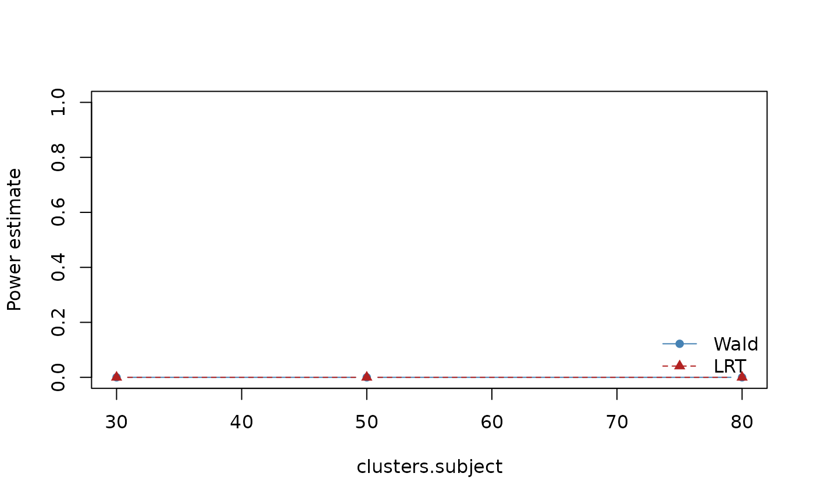

mixpower provides simulation-based power analysis for Gaussian linear mixed-effects models.
MixPower supports two inferential paths in the lme4
backend:
"wald" (default): coefficient z-test from fixed-effect
estimate and its SE."lrt": likelihood-ratio test between explicit null and
full models.For LRT, you must provide null_formula explicitly. This
avoids hidden model-reduction rules and keeps assumptions
transparent.
d <- mp_design(clusters = list(subject = 40), trials_per_cell = 8)
a <- mp_assumptions(
fixed_effects = list(`(Intercept)` = 0, condition = 0.4),
residual_sd = 1,
icc = list(subject = 0.1)
)
scn_wald <- mp_scenario_lme4(
y ~ condition + (1 | subject),
design = d,
assumptions = a,
test_method = "wald"
)
scn_lrt <- mp_scenario_lme4(
y ~ condition + (1 | subject),
design = d,
assumptions = a,
test_method = "lrt",
null_formula = y ~ 1 + (1 | subject)
)
vary_spec <- list(`clusters.subject` = c(30, 50, 80))
sens_wald <- mp_sensitivity(
scn_wald,
vary = vary_spec,
nsim = 50,
seed = 123
)
sens_lrt <- mp_sensitivity(
scn_lrt,
vary = vary_spec,
nsim = 50,
seed = 123
)
comparison <- rbind(
transform(sens_wald$results, method = "wald"),
transform(sens_lrt$results, method = "lrt")
)
comparison[, c(
"method", "clusters.subject", "estimate", "mcse",
"conf_low", "conf_high", "failure_rate", "singular_rate"
)]
#> method clusters.subject estimate mcse conf_low conf_high failure_rate
#> 1 wald 30 0 0 0 0 0
#> 2 wald 50 0 0 0 0 0
#> 3 wald 80 0 0 0 0 0
#> 4 lrt 30 0 0 0 0 0
#> 5 lrt 50 0 0 0 0 0
#> 6 lrt 80 0 0 0 0 0
#> singular_rate
#> 1 0
#> 2 0
#> 3 0
#> 4 0
#> 5 0
#> 6 0
wald_dat <- comparison[comparison$method == "wald", ]
lrt_dat <- comparison[comparison$method == "lrt", ]
plot(
wald_dat$`clusters.subject`, wald_dat$estimate,
type = "b", pch = 16, lty = 1,
ylim = c(0, 1),
xlab = "clusters.subject",
ylab = "Power estimate",
col = "steelblue"
)
lines(
lrt_dat$`clusters.subject`, lrt_dat$estimate,
type = "b", pch = 17, lty = 2,
col = "firebrick"
)
legend(
"bottomright",
legend = c("Wald", "LRT"),
col = c("steelblue", "firebrick"),
lty = c(1, 2), pch = c(16, 17), bty = "n"
)
Interpretation notes:
estimate reflect inferential method
sensitivity under the same DGP.failure_rate and singular_rate
alongside power; higher failures can depress usable inference.nsim modest in examples, and increase in final
study planning runs.null_formula documentation in reports
for LRT reproducibility.